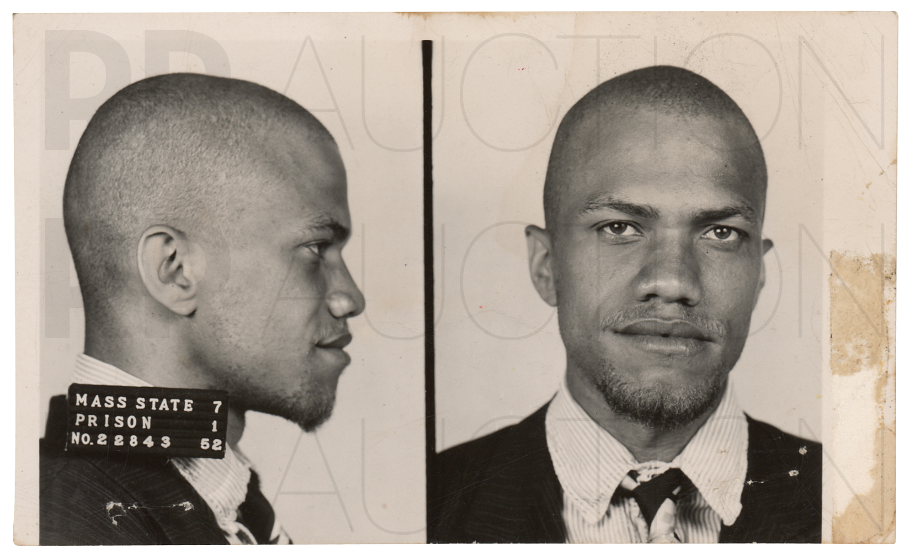

Malcolm X was a famous civil rights activist for the african-american people.
Born on May 19th, 1925 in the town of Omaha, Nebraska, he was no stranger to discrimination. At the age
of six, his father, a minister and previous civil rights activist, was ran over by white people.
Afterwards, Malcolm's family faced deep poverty, and in 1939 his mom was declared mentally insane. His
mother had to go to an insane asylum, and the rest of Malcolms siblings were sent to foster homes.
Still, Malcolm had great grades in school. He excelled all his classes. But, a teacher kept discouraging
Malcolm, so he gave up on school. This started his darker times, he got intervened in drug dealing and
theivery. He was even sent to jail for theft in 1946.
In Malcolms around 10 years in jail, he had an important conversation.
This conversation would change his whole life around, hopefully for the better. This conversation
led him to join the Nation of Islam, a group of rising popularity that focused african-american
rights and Islam funds. This change of religion shaped who he was for the rest of his life. Malcolm
stopped smoking, gambling, eating various types of meat, and a lot more to follow the rules of the
religion. He started studying again and even replaced his last name to X.
